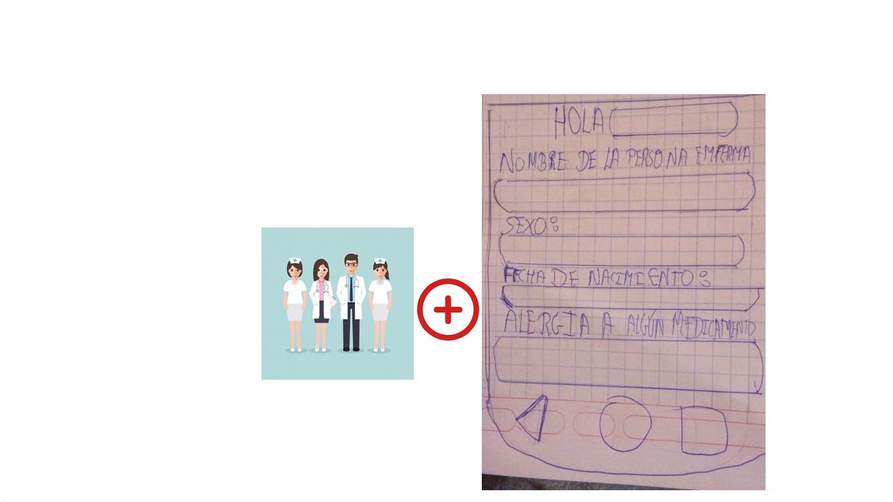

Curso:Gerenciando el proceso de innovación
Docentes: Luis Peña y Pablo Moreno
Integrantes:León Camarena Luis Enrique
Jason Jose Chambe Lopez
Renzo Luna
Definión del problema:
Efectos de la anemia
Los efectos de la anemia son: La carencia de hierro afecta negativamente el desarrollo cerebral, debido a que dicho proceso depende de enzimas y proteínas que contienen hierro , mecanismos de los efectos a largo plazo de la anemia y la deficiencia de hierro.
Dicho esto tambien existe una clasificación de los efectos de la anemia , las cuales son:
EFECTO DE DESARROLLO MOTOR: El área motora se relaciona a la habilidad de los niños para controlar el movimiento de sus músculos, clasificándose en habilidades motoras finas y gruesas. El desarrollo motor del niño es el resultado de muchos factores, propios del niño y otros de su entorno, siendo un riesgo muy importante la presencia de anemia durante el período crítico de los primeros años o meses de vida .
EFECTOS DE CAMBIOS EN LA CONDUCTA: La conducta socioemocional es otra importante área para el desarrollo infantil, y comprende el establecimiento de relaciones con otras personas usando sus emociones, como la regulación de sí mismo.Afecta a los niños de 6-36 meses mayoritariamente según fuentes confiables del Minsa Y del INEI.
Anemia
Es un trastorno en el cual el número de glóbulos rojos o eritrocitos circulantes en la sangre se ha reducido y es insuficiente para satisfacer las necesidades del organismo. En términos de salud pública, la anemia se define como una concentración de hemoglobina por debajo de dos desviaciones estándar del promedio según género, edad y altura a nivel del mar (norma técnica 134) Al principio, la anemia puede ser leve y pasar inadvertida. No obstante, los síntomas empeoran a medida que la anemia empeora, algunos correctores por altura,según el doctor Gustavo Gonzalez.La anemia puede ser empeorada si hay un aumento de hierro, este aspecto no es tomado en cuenta en los correctores de hemoglobina en las alturas y por ende las estadísticas están mal elaboradas.Por otro lado la doctora Delia Haustein pide constantemente cuidar de la anemia a los menores de 2 años, ya que si se le descuida a esa cierta edad es probable que cuando sea adulto pierda sus habilidades.
Requerimiento de hierro
El muy reconocido doctor sugiere respetar el cuadro que acba de mejora últimamente.

Medición
Nos enfocamos en un determinado grupo de menores de edad , ya que estos son más propensos. Datos alarmantes.Es elevada a los 6 meses de edad. •Afecta al 60% de los niños 6-36 meses de edad y es en la región de Puno el sector más afectado por este problema. • A partir de 3 años se reduce significativamente Prevalencia de anemia infantil en diversos países OMS – 2011 Anemia en Mujeres en Edad Fértil Perú - 2015 Nacional 20.7% Urbano 20.8% Rural 20.3% Otros países: OMS 2011 México 14% Canadá: 16% Finlandia 17% Alemania 18% Colombia 19% Ecuador 24% Bolivia: 32% India 48% Burkina Faso 48% Pakistán 51%
Mapa de Valor y Perfil de cliente
A continuación cuando usted vea nuestros cuadros se percatrá que nos enfocamos en examinar a un grupo determinado ya que estos representan un alto indice en nuestra comunidad, tales como: niños, madres gestantes,médicos y el estado.

Prevalencia de anemia en regiones:
Segun investigaciones poco recientes, la selva tiene cuadro preocupantes de anemia, en comparación con la regiones de la costa y sierra.Sin embargo nosotros nos enfocaremos en la sierra, en la región de Puno ya que este último no cuenta con muchos recursos económicos.

COMPARACIÓN DE ESTÁNDARES (STI) (ESTÁNDARES INTERNOS)
Palti et al. (1985), en un estudio para Israel, encuentran evidencia de los efectos de largo plazo de la anemia por deficiencia de hierro, al comparar los resultados en pruebas de inteligencia aplicadas a niños de 10 años de edad que padecieron de anemia en los primeros meses de vida y niños que no. Específicamente, este estudio encuentra que los niños con anemia durante sus primeros nueve meses, a la edad 10 a 13 años, tenían en dichas pruebas 2,2 puntos menos que los niños que no la tuvieron.Más aún, estudios como Walter et al. (1989, 1990) encuentran que a pesar de curarse la anemia luego del primer año, el efecto negativo en el desarrollo cognitivo no se revierte, pues los niños que padecieron de anemia siguen teniendo menores puntajes en las pruebas de desarrollo cognitivo con relación a los niños que no la padecieron.
Mapa de valor del Estado
Segun investigaciones poco recientes, la selva tiene cuadro preocupantes de anemia, en comparación con la regiones de la selva y sierra.
Médico
Madres gestantes
perfil de madres
Madres
Perfil de cliente del médico
Perfil de cliente
Estado
Causas y estado de arte de la anemia
Primero analizaremos un previo concepto sobre la causa de la anemia
Concepto: Es una disminución del número de glóbulos rojos en la sangre, que son los que se ocupan de trasladar el oxígeno a todos los órganos del cuerpo, gracias a la hemoglobina que contienen. La hemoglobina es una proteína que se encarga de transportar el oxígeno necesario para el buen funcionamiento de los tejidos y órganos de nuestro cuerpo. En el Perú, la anemia en este año ha ido empeorando. El 43% menores de 3 años padecen de anemia. El Ejecutivo no cumplió la meta de reducir esta afección al 37,9% que prometió durante el 2017.
Causas frecuentes de la anemia
Causas: “Algunas enfermedades hematológicas, como las aplasias medulares o la infiltración de médula ósea por tumores” . Déficit de hierro Anemia que acompaña a enfermedades reumáticas, y la enfermedad que se asocia a la insuficiencia renal crónica. Déficit de vitamina B12 o de folatos. Pérdida aguada de sangre ocasiona por algún tipo de hemorragia. En menores de un año puede ser peligroso porque el exceso de la leche de vaca puede producir una pérdida de glóbulos rojos en la sangre a esta edad.
Referencias bibliográficas
(2012, 02). Anemia. ClubEnsayos.com. Recuperado 02, 2012, de https://www.clubensayos.com/Psicología/Anemia/140085.html
Robin E. Miller. (Septiembre de 2012). TeensHealth https://kidshealth.org/es/teens/anemia-esp.html
(2) FERNANDO ALAYO ORBEGOZO. (2018). El Perú no se cura de la anemia: 43% de menores de 3 años la padece. El Comercio https://elcomercio.pe/peru/peru-cura-anemia-informe-noticia-515093
(3) Guiainfantil. (Julio de 2015). Anemia infantil en niños y bebés https://www.guiainfantil.com/salud/enfermedades/anemia/index.htm
(4) MedlinePlus. (2018). Anemia causada por bajo nivel de hierro en los niños. Biblioteca Nacional de Medicina de los EE. UU. https://medlineplus.gov/spanish/ency/article/007134.htm
Pautas antes de iniciar nuestro estado de arte
Foco o Escenario de Busqueda: Anemia entre 6 a 35 meses de edad por la siguiente razón: a) INEI en el ENDES 2018 (resultados preliminares al 50%) Escenario escogido dado que según la INEI en el ENDES 2018 (resultados preliminares al 50%) se señala el siguiente cuadro donde se puede percibir a los a los ninños entre 6 a 35 meses siendo los mas afectados en la nación con respecto

Estado de arte
Según (MONIN) para entender mejor la importancia de la anemia en la nación, es preciso revisar con más detalle la información relacionada a la prevalencia de la anemia en los últimos años. De acuerdo al informe del Monitoreo Nacional de Indicadores Nutricionales (MONIN) para el periodo 2008-2009, la anemia afectaba al 43,4% de los niños de 6 a 35 meses de edad a nivel nacional (Alcázar , 2012). c) Según La Encuesta Demográfica y de Salud Familiar (ENDES), a su vez, proporciona resultados similares a los del MONIN. Al 2010, la prevalencia de la anemia en niños menores de 5 años fue del 37,7% a nivel nacional, mientras que aquella entre las MEF( en la que esta fuertemente vinculada la anemia dado que genera fuertes impactos economicos en el Perú como ella logra explicar este en su libro Grade) esta fue de 21,5% (Alcázar , 2012). d) Asimismo, el Sistema de Información del Estado Nutricional (SIEN) señala que, en el año 2010, el 25% de mujeres gestantes padecía de anemia y que las más perjudicadas eran las de la sierra sur y central. (Alcázar , 2012
Investigaciones poco recientes
El primero es HemoGlobe, diseñado por estudiantes de pregrado de ingeniería biomédica de Johns Hopkins (Baltimore, MD, EUA). El sensor del dispositivo, colocado en la punta del dedo de los pacientes, proyecta diferentes longitudes de onda, a través de la piel, para medir el nivel de hemoglobina en la sangre. En la pantalla del teléfono, un trabajador de la salud de la comunidad, ve rápidamente un resultado del análisis con un código de color, indicando casos de anemia, desde ligera a moderada y severa. (Hopkins)
El segundo, diseñado por CSIC en la Universidad de Vigo, es un sensor que detecta la presencia de proteínas infecciosas llamadas priones en la sangre antes de los primeros síntomas. El método consiste en sumergir un supercristal con el sensor óptico en una muestra de plasma. El sensor hace que la señal que rebota en los priones se obtenga de forma ampliada. (Consejo Superior de Investigaciones Cientificas)
El tercero es Glaswing, diseñado por OrSense, un monitor capaz de medir la hemoglobina sin la necesidad de la extracción de sangre. Este utiliza una tecnología llamada SpectOLight basada en la espectroscopia para realizarla, usa un sensor en forma de anillo que se coloca en el dedo el cual aplica presión para ocluir de manera temporal el flujo sanguíneo.
Mapa de anemia
Referencias Bibliograficas:
(1) Lucio Huamán-Espino. (2012). Consumo de suplementos con multimicronutrientes Chispitas® y anemia en niños de 6 a 35 meses: estudio transversal en el contexto de una intervención poblacional en Apurímac, Perú. 2012, de Revista Peruana de Medicina Experimental y Salud Publica Sitio webhttp://www.scielo.org.pe/scielo.php?script=sci_arttext&pid=S1726-46342012000300004
(2) Maylen Liseth Rojas, Juliana Sánchez, Óscar Villada, Liliana Montoya, Alejandro Díaz, Cristian Vargas, Javier Chica, Ana Milena Herrera. (13/07/12). Eficacia del hierro aminoquelado en comparación con el sulfato ferroso como fortificante de un complemento alimentario en preescolares con deficiencia de hierro. 14/03/13, de INSTITUTO NACIONAL DE SALUD Sitio web: https://www.revistabiomedica.org/index.php/biomedica/article/view/775/2291
Norma técnica 134-Manejo Terapéutico y Preventivo de la Anemia en Niños, Adolescentes. Lima Ministerio de la Salud 2017 http://bvs.minsa.gob.pe/local/MINSA/4190.pdf
Plan Nacional para la Prevención y Control de la Anemia Materno Infantil y la Desnutrición Crónica Infantil en el Perú 2017-2021. Documento técnico/ Ministerio de la Salud/ Dirección General de Intervenciones Estratégicas en Salud Pública.http://bvs.minsa.gob.pe/local/MINSA/4189.pdf
Nelly Zavaleta Laura Astete-Robilliard. (dic 2017). Efecto de la anemia en el desarrollo infantil: Consecuencias a largo plazo., de UPC http://www.scielo.org.pe/scielo.php?script=sci_arttext&pid=S1726-46342017000400020
Metodologia de diseño
Público objetivo
Los efectos de la anemia son: déficit de aprendizaje, efectos en la conducta, mala conducta en la niñez y conducta bipolar.Afecta a los niños de 6 a 36 meses de la región de Puno debido a que en este rango de edad los niños tienden a sufrir anemia.Además que hay más de 100 000 niños con anemia en la región de Puno según la integrante de la Estrategia Sanitaria de Alimentación y Nutrición de la Dirección Regional de Salud Puno, Noemí Ayma Flores. Por otro lado el sociólogo Carlos Flores asegura que hay un factor social y cultural detrás. “En las comunidades las madres cuidan a sus hijos en la medida de sus posibilidades". Además que las madres se resisten a las recomendaciones del Minsa. Y en las zonas urbanas las personas prefieren trabajar antes de cuidarse y cuidar a sus hijos”.Por otro lado el agua insalubre que llega a sectores alejados ocasionan por las bajas defensa de la anemia que el humano desarrollen emfermedades como cólera, fiebre tifoidea, hepatitis A y E con mayor intensidad y sacamos esto a partir de diferentes medios tales como revistas, periódicos publicados por Lorena Alcázar y Noemí Ayma Flores, también de datos de la INEI.

Tabla de requerimiento
Entradas y salidas
Esquema de funciones
Matriz morfológica
Evaluación de conceptos de solución

Proyectos preliminares
PROYECTO PRELIMINAR 1(BORTEX)
Proyecto preliminar 2
